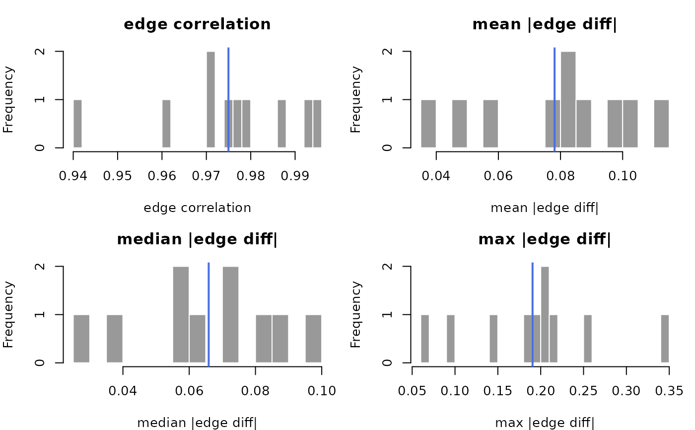

Split-half reliability of the network edge structure
Source:R/reliability.R
net_split_reliability.RdRepeatedly splits the sample into two halves, estimates a network on each, and compares their edge-weight vectors. Reports, across splits, the edge-weight correlation between halves plus the mean/median/maximum absolute edge deviation - a psychometric reliability view of the estimated structure.
Arguments
- data
Data frame or matrix (rows = observations), resampled exactly as given (see
net_boot()), or apsychnet_group(split-half per level).- method
Estimator (see
psychnet()). Default"glasso".- iter
Number of split-half iterations. Default 100.
- split
Fraction of rows in the first half. Default 0.5.
- cor_method
Correlation method for the between-halves edge comparison:
"pearson"(default),"spearman", or"kendall".- labels
Optional node labels.
- estimator_args
Named list of estimator arguments.
cor_method,iterandsplitare arguments of this diagnostic (the between-halves comparison), so an estimator's owncor_methodorthresholdmust go here, e.g.estimator_args = list(cor_method = "spearman"); values in...with those names never reach the estimator.- ...
Passed to the estimator by
net_split_reliability(); ignored by the methods.- x
A
psychnet_reliabilityobject.
Value
A tidy data.frame (class psychnet_reliability), one row per metric
with columns metric, mean, sd, lower, upper (2.5% and 97.5%
percentiles across splits) and n_valid (splits in which the metric was
defined). The edge correlation is 0 for a split in which exactly one half
has a constant edge vector (for example an empty network against a
non-empty one, as in bootnet's cor0()), and undefined when both halves
are constant (they agree, but no correlation exists) or fewer than two
edges are available; undefined splits are excluded from the summary, counted out of
n_valid, and announced by a psychnet_undefined_statistic warning. A
metric defined in no split has NA summaries. A failed split fit raises a
psychnet_resample_failed warning carrying the first error; a failed
full-sample fit raises a psychnet_estimation_failed error with the
estimator's message. The per-split draws are stored with the result for
plot(), which draws a histogram of each metric across splits with its
mean marked. print() and plot() return x invisibly.
Functions
print(psychnet_reliability): The between-halves metric table.plot(psychnet_reliability): Histograms of the metrics across splits.
Examples
# `method` and `iter` are chosen so the example runs quickly; the defaults
# (method = "glasso", iter = 100) are what a real assessment should use.
sh <- net_split_reliability(SRL_Claude, method = "pcor", iter = 10)
sh
#> # split-half reliability: pcor | 10 iterations (50/50 split)
#> metric mean sd lower upper n_valid
#> 1 mean_abs_dev 0.07808955 0.02457258 0.03846060 0.10963050 10
#> 2 median_abs_dev 0.06588545 0.02220565 0.02991325 0.09716984 10
#> 3 correlation 0.97498013 0.01592382 0.94570362 0.99516211 10
#> 4 max_abs_dev 0.19047875 0.07735301 0.07527392 0.32270329 10
plot(sh)
